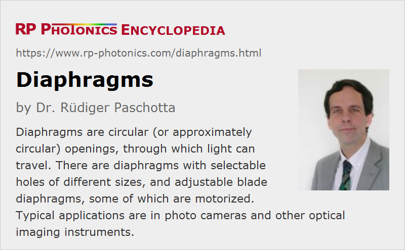

Diaphragms
Definition: circular (or approximately circular) openings through which light can travel
Alternative terms: stops, apertures
German: Diaphragmen
Category: vision, displays and imaging
How to cite the article; suggest additional literature
Author: Dr. Rüdiger Paschotta
Diaphragms are circular (or approximately circular) openings, through which light can travel. They act as intentionally introduced optical apertures, e.g. in photographic objectives. Diaphragms may have a fixed opening diameter, but others have a variable opening diameter (iris diaphragms). Some of the latter can electrically controlled.
Typically, a diaphragm is quite thin, and its non-transparent parts are often absorbing, e.g. due to a black coating.
Diaphragms are also called stops, because they stop the light passage in some regions. If they limit the field of view of an instrument, they are called field stops. In other cases, they may act as aperture stops, reducing the amount of light getting through a system.
The role of a diaphragm in an imaging system is explained in the article on imaging with a lens.
Types of Diaphragms
In the simplest case, a diaphragm is a blackened metal plate with a circular hole. If it is small, it is also called a pinhole. There are also devices with a rotatable metallic plate, containing holes of different sizes, so that one can select between them by rotating the plate. Devices of that kind have been used in older photo cameras.
Blade diaphragms have an opening of variable diameter, limited by some number of blades, which can be moved more or less towards the center. There is often a mechanical mechanism, which allows one to move all blades in a coordinated manner e.g. by translating a single handle. The shape of the opening is a polygon, which more or less approximates a circle if the number of blades is large.
Some of those devices are motorized, so that they can be electrically controlled. For example, some modern photographic objectives contain such variable blades diaphragms, so that the microprocessor of the camera can automatically select f-number settings.
Some diaphragms are used in beam shutters. They may be optimized such that they can tolerate substantial optical powers.
Suppliers
The RP Photonics Buyer's Guide contains 4 suppliers for diaphragms. Among them:
Questions and Comments from Users
Here you can submit questions and comments. As far as they get accepted by the author, they will appear above this paragraph together with the author’s answer. The author will decide on acceptance based on certain criteria. Essentially, the issue must be of sufficiently broad interest.
Please do not enter personal data here; we would otherwise delete it soon. (See also our privacy declaration.) If you wish to receive personal feedback or consultancy from the author, please contact him e.g. via e-mail.
By submitting the information, you give your consent to the potential publication of your inputs on our website according to our rules. (If you later retract your consent, we will delete those inputs.) As your inputs are first reviewed by the author, they may be published with some delay.
See also: optical apertures, optical slits, pinholes, f-number, field stops, aperture stops
and other articles in the category vision, displays and imaging
|  |
If you like this page, please share the link with your friends and colleagues, e.g. via social media:
These sharing buttons are implemented in a privacy-friendly way!